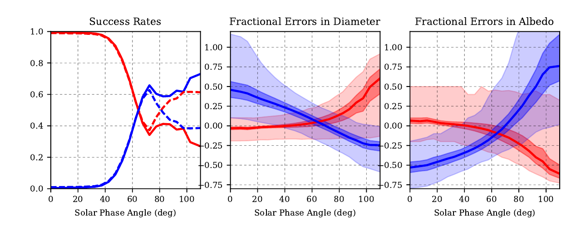

Die überwiegende Mehrheit aller derzeit verfügbaren Asteroidendurchmesser und Albedos wurde aus thermischen Infrarotbeobachtungen abgeleitet, die eine Methode namens thermisches Modellieren verwenden. Thermische Modelle simulieren die Oberflächentemperaturverteilung eines Asteroiden, die verwendet wird, um den thermischen Infrarotfluss abzuleiten, der von dem Körper emittiert wird. Durch Variation der Modellparameter – hauptsächlich Durchmesser und Albedo – können die Eigenschaften eines Asteroiden an Beobachtungen der thermischen Emission angepasst und somit geschätzt werden.
Thermische Modelle sind viel einfacher als die ausgefeilteren thermophysikalischen Modelle. Sie nehmen beispielsweise eine sphärische Form des Asteroiden an, und die Oberflächentemperatur wird unter der Annahme eines sofortigen thermischen Gleichgewichts abgeleitet. Die Modelldefinitionen können variieren. Das Standard Thermal Model (STM) berücksichtigt nicht den Sonnenphasenwinkel und geht von einer sehr langsamen Rotation und/oder niedriger thermischer Trägheit des Asteroiden aus, während das Fast-Rotating Model (FRM) von einer schnellen Rotation und/oder hoher thermischer Trägheit ausgeht. Das derzeit am weitesten verbreitete Modell ist das Near-Earth Asteroid Thermal Model (NEATM), das auf dem STM basiert, aber geometrisch den Sonnenphasenwinkel berücksichtigt und den sogenannten Beaming-Parameter verwendet, um die Oberflächentemperatur global zu modulieren.
Das NEATM ist in der Regel eine gute Wahl und gilt für eine breite Palette von atmosphärenlosen Körpern. Theoretisch könnte es jedoch Fälle geben, in denen das FRM bessere Schätzungen für die Eigenschaften eines Asteroiden liefert, nämlich für extrem schnell rotierende Asteroiden, Asteroiden mit spezifischen Spin-Konfigurationen oder unter bestimmten Beobachtungsbedingungen. Diese Arbeit untersucht, ob es Fälle gibt, in denen das FRM dem NEATM im Fall von erdnahen Asteroiden (NEAs) überlegen ist.
Um die Leistung des NEATM und des FRM bei NEAs zu untersuchen, simulieren wir thermische Infrarotflussdichten für 1 Million synthetischer Asteroiden unter Verwendung eines komplexeren thermophysikalischen Modells und wenden beide thermischen Modelle auf jedes dieser Datensätze an. Die Leistungen werden mithilfe von zwei benutzerdefinierten Metriken und marginalisierten Plots für die Simulations-Eingangsparameter verglichen.
Was wir festgestellt haben, ist, dass in der überwiegenden Mehrheit der Fälle das NEATM dem FRM eindeutig überlegen ist – was bedeutet, dass es bessere Schätzungen der Durchmesser und Albedos der Ziele ableitet. Interessanterweise haben die physikalischen Eigenschaften der Ziele nur einen vernachlässigbaren Einfluss auf die Leistung beider Modelle, einschließlich der Rotationsgeschwindigkeit (selbst bei Rotationsperioden von nur wenigen Sekunden), hoher thermischer Trägheiten und Spin-Neigungen, die Oberflächentemperaturverteilungen erzeugen, die der vom FRM angenommenen ähnlich sind.
{kind=link}

Das wichtigste Ergebnis dieser Studie ist im obigen Diagramm (Abbildung 4 im Paper) dargestellt: Wir stellen fest, dass das FRM bei Sonnenphasenwinkeln von mehr als ~65 Grad im Durchschnitt besser abschneidet als das NEATM. Es war bereits bekannt, dass das NEATM bei hohen Phasenwinkeln versagt, aber unsere Studie schlägt eine Alternative zum NEATM für solche Fälle vor.
Darüber hinaus stellen wir fest, dass etwa 5% aller NEO-Durchmesser und Albedos, die mit dem NEATM aus Spitzer- und WISE-Daten abgeleitet wurden, von diesem Effekt betroffen sind und daher unzuverlässig sind. Schließlich bieten wir eine empirische Korrektur für Durchmesser und Albedos an, die mit dem NEATM und dem FRM in Abhängigkeit vom Sonnenphasenwinkel abgeleitet wurden.
Bibliographie
- Mommert, M., Jedicke, R., & Trilling, D. E. (2018), “An Investigation of the Ranges of Validity of Asteroid Thermal Models for Near-Earth Asteroid Observations”, The Astronomical Journal, 155, 74., publication, arxiv